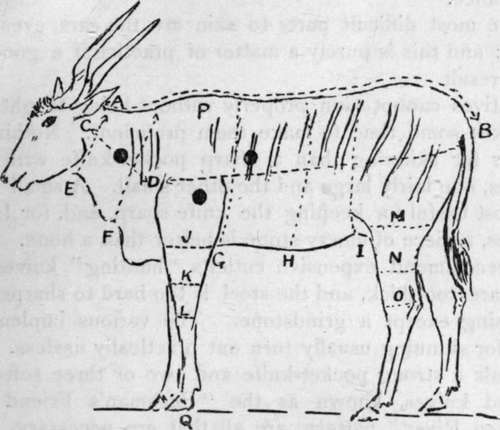

Chapter XI. Various Subjects For The Sportsman And Naturalist
Description
This section is from the book "Wild Life In Central Africa", by Denis D. Lyell. Also available from Amazon: Wild Life in Central Africa.
Chapter XI. Various Subjects For The Sportsman And Naturalist
I.—Protective colouration of animals.
II.—Preservation of trophies.
III.—Buying secondhand guns and rifles.
IV.—Native implements, foods, price of labour, etc.
V.—Health in the tropics, and climatic influences.
VI.—Different routes to Central Africa.
VII.—Information for the settler regarding the leasing and purchase of land.
VIII.—The literature of big game shooting.
IX.—A few remarks on rifles and equipment.
I. Protective Colouration In Animals
A good deal has been written of late on this subject in the columns of the Field newspaper, and it would seem that the hunters of big game, such as Mr. F. C. Selous and C. H. S., who lately wrote a very interesting article on the subject in the paper mentioned, disagree almost wholly with the ideas of the closet naturalists and entomologists who have also been writing on the same subject.
The theory when applied to insects may hold good to a certain extent, as birds which feed on insects doubtless seek their food by sight.
It is the opposite with animals, as they hunt by night and by scent; and it makes no difference to them whether their prey has a black, red, or white coat, or whether it is marked with all the colours of the rainbow, if such an animal were possible.
Animals were doubtless antecedent to man on the face of the globe, so why should man suppose that his existence is of any account. Instead of hunting by scent he hunts by sight—long ago with spears and bows and arrows, and now with deadly small bores—but it makes no difference to him what the colour of the game is, because it never keeps still for long, as Nature has decreed that all animals must constantly move their bodies, tails, and ears. Certainly an elephant standing motionless in high dark bush, or a zebra in open bush with rays of light pouring through, are both difficult to see at times, but how often does this happen in a hunter's experiences ?
It is impossible to know why a sable antelope should be coloured black and white, and a kudu a slaty blue ; and I suppose all species have some colouring matter in their skins which cause these noticeable differences. Animals that live mostly in the open, in a country where the rays of the sun are very powerful, get scorched and bleached.
This is very noticeable in the zebras of British East Africa which inhabit vast open plains. The zebras of Central Africa, Nyasaland, and Northern Rhodesia, which live in a heavily bushed country, have brighter shades of black and whitish-yellow in their striped hides. A photograph of any example of protective colouration is no proof at all, as the eye of man does not view objects as the lens of a camera does. Possibly in past ages animals lived in surroundings more like their colouration, but destructive man has changed the face of nature, or driven game out of its natural surroundings, and it has failed to keep pace with the change.
However, this is almost as fantastical an idea as protective colouration itself, and it will hardly hold good, I am afraid. It is generally assumed that Nature can make no mistakes, so if animals are not coloured to imitate their surroundings, I suppose that Nature did not think it necessary to do so.
Therefore it is a subject not worth worrying about, as the whole matter rests on no basis, except that animals in their own bodies possess natural proclivities of transmitting their own colours to their descendants.
The idea that colour helps any animal to escape an enemy that is seeking to kill it is absurd, as all carnivorous beasts hunt by scent, hearing, and speed, so the hunted animal has to depend on its own scent, hearing, and speed if it is to escape.
A lion probably hardly raises his head many inches from the ground when he is on the tracks of a zebra or an antelope; and as he doubtless sees better in the dark than can human beings, he probably makes his last rush by eyesight. In the dark it would be impossible to see more than an animal's faint outline, so it matters not what its colour is. After insects, reptiles are more protectively coloured than any creatures, and it certainly requires very quick and acute eyesight to see a slumbering puff adder, but this is more a matter of habit than keen sight. The puff adder's skin is a wonderful imitation of dead leaves and vegetation ; but the leaves and vegetation are not coloured the same in all the seasons of the year.
If animals are supposed to be protectively coloured, why do not they all change with the seasons ? I know that certain animals and birds in the colder regions of the world do change their covering in winter, but this can be of little avail, as their enemies hunt by scent; although in the case of birds of prey their hunting is done by sight, It would seem that climate has more to do with the colouration than anything else, except that animals living in the same climate exhibit many contrasts of colour.
Naturalists may be convinced that certain reptiles and insects are protectively coloured; but they will never convince big game hunters that colouration is of any use to any animal, as it is fully proved that such is not the case.
There is too strong a tendency to try reasoning the subject from the human standpoint, whereas man, not being implicated in the scheme of Nature, as it applies to wild creatures, is out in the cold, so to speak. The intelligence of man is capable of many wonderful things ; but I do not think he will ever know much more about Nature's colour scheme than he does at present.
II.—The Preservation Of Trophies
Before a trophy is taken, careful measurements should be made, so that the taxidermist will be able to mount it exactly as it was on the dead animal.
Sportsmen usually either take the bare horns and skull or they also take the headskin. In the latter case, the lower jaw of the animal should be kept, as the taxidermist will have great difficulty in making a jaw to suit. To take measurements, a steel tape is best; and the only measurements necessary for a headskin trophy are those of the base of the neck and the neck just behind the ears. The cut should be made right over the shoulders, for, if the skin is short, the trophy will be an ugly one when mounted. Cut up the edge of the mane hair to behind the horns, and then make two cross cuts to the base of the horns, and go round them as close as possible without injuring the horn substance.
Fig. 1. Eland Bull, Showing the Way to Take Measurements for Specimens Intended for Mounting in Museums.
A to B—From back of skull to root of tail.
C to D—From base of ear to shoulder.
D to B—From shoulder to root of tail.
E, F, G, H, I, J, K, L, M, N, and O—Circumferences.
P to Q—Standing height. Taken by putting peg in the ground at top of shoulder and bottom of a forefoot. The four leg bones ought to be kept for the use of the taxidermist. * Denotes heart, lungs, and neck for vital shots. The brain shot should not be used, as it destroys the skull.
The most difficult parts to skin are the ears, eyes, and nose; and this is purely a matter of practice if a good job is to result.
Continue to:
- prev: Native Characteristics, Customs, And Beliefs (Mainly Angoni). Part 7
- Table of Contents
- next: Various Subjects For The Sportsman And Naturalist. Part 2